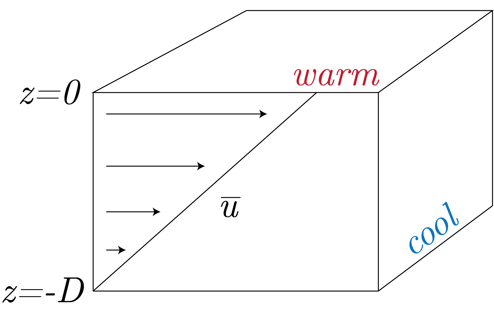
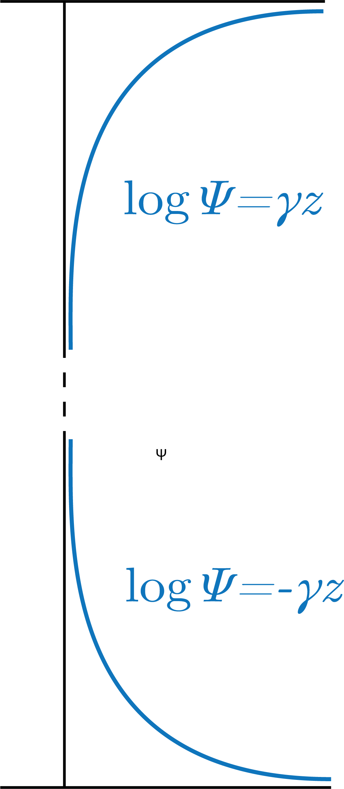

The leargest funding is that the weavelength of the fastest growing scale is:
\begin{equation}
L \sim \frac{ND}{f},
\end{equation}
which has the growth rate of:
\begin{equation}
\nu ~ \frac{f}{\sqrt{\text{Ri}}},
\end{equation}
where Ri is the Richardson number defined as:
\begin{equation}
\text{Ri} = \frac{N^2}{\text{d}\overline{u} / \text{d}z}.
\end{equation}
In the atmosphere, we have that Ri $\sim 10^3$ in the ocean and $\sim 10^2$ in the atmosphere.
Therefore, we can find that:
\begin{equation}
\nu \sim \frac{10^{-4}}{3 \times 10} = 3 \times 10^{-5} \: [\text{s}^{-1}].
\end{equation}
We present the setup in Fig. 1

Fig. 1: The set-up for the baroclinic instability.
The Derivation
We start with:
\begin{equation}
f \partial_z \overline{u} = - \partial_y \overline{b} = \eta^2 > 0,
\end{equation}
where we define:
\begin{equation}
\overline{b} = N^2 z - \eta^2 u,
\end{equation}
and have the BCs:
\begin{equation}
u_T \: \frac{\eta^2D}{f_0} = \Lambda D \quad \text{ and } \quad u_B = 0.
\end{equation}
Now, we want to linearize the QGPV equation, by first noting:
\begin{equation}
\partial_y \overline{q} = \nabla^2\overline{\Psi} + f + f_0^2\partial_z\left[ \frac{1}{N^2}\partial_z\overline{\Psi}\right] = 0,
\end{equation}
and then seeing that:
\begin{equation}
\partial_t q' + \overline{u}\partial_x q' = 0 \Rightarrow q' = 0,
\end{equation}
meaning that if $q'(t=0) = 0 \Rightarrow q'(t) = 0 \: \forall \: t$.
Really what this is "behind the hood" is:
\begin{equation}
\nabla_h^2 \Psi' + \frac{f_0^2}{N^2}\partial_{zz}\Psi' = 0.
\end{equation}
The boundary conditions then mean:
\begin{equation}
\partial_zb' + \overline{u}\partial_xb' + v' \partial_y \overline{b} + w N^2 = 0,
\end{equation}
where we note that $w=0$ at the top and bottom.
We are now looking for plane wave solutions of the form:
\begin{equation}
\Psi' = \widehat{\Psi}\left(z \right) exp\left[\text{i}(kx + ly - \omega t\right].
\end{equation}
Plugging this in to our equation of steady state for $q'$, we get:
\begin{equation}
\frac{f^2}{N^2}\partial_{zz}\widehat{\Psi} - K^2\widehat{\Psi} = 0.
\end{equation}
We then assume:
\begin{equation}
\widehat{\Psi} \sim \exp\left[\gamma z\right],
\end{equation}
then we get:
\begin{equation}
\frac{f^2}{N^2}\gamma^2 - K^2 = 0 \Rightarrow \gamma = \frac{KN}{f},
\end{equation}
which leads to something of the form presented in Fig. 2

Fig. 2: Solution to $\Psi$ given BCs.
Then, we can plut into our BCs to get:
\begin{align}
\text{Top:} &\quad (k\overline{u} - \omega)\partial_z\widehat{\Psi} - k\Lambda\widehat{\Psi}= 0, \\
\text{Bottom:} &\quad -\omega\partial_z\widehat{\Psi} - k\Lambda\widehat{\Psi} = 0.
\end{align}
Therefore, we can rearrange to get:
\begin{align}
\text{Top:} &\quad(k\Lambda D - \omega) \frac{NK}{f} - k\Lambda = 0, \\
\text{Bottom: } &\quad \omega \frac{NK}{f} - k\Lambda = 0.
\end{align}
for the top and then get the dispersion relation:
\begin{align}
\text{Top:} &\quad \omega_T = k\Lambda D - \frac{fk}{NK}\Lambda, \\
\text{Bottom: } &\quad \omega_B = \frac{fk}{NK}\Lambda.
\end{align}
Therefore, the phase speed is:
\begin{align}
c_{T,p} &= \frac{\omega}{k} = \Lambda D - \frac{f}{NK}\Lambda, \\
c_{B,p} &= \frac{\omega}{k} = \frac{f}{NK}\Lambda \\
\end{align}
So, the instability occurs when $c_{T,p} \sim c_{B,p}$. Therefore, this is true when (just equating the phase speeds):
\begin{equation}
\Lambda D = 2\frac{f}{NK}\Lambda
\end{equation}
which gives:
\begin{equation}
K = \frac{2f}{ND}.
\end{equation}
We note that this is very close to the First Deformation Wave number, which is:
\begin{equation}
K_1 = \frac{\pi f}{ND}.
\end{equation}
Therefore, we re-write as:
\begin{equation}
K = \frac{2}{\pi}K_1.
\end{equation}
For the growth rate, we have that:
\begin{equation}
\frac{f\overline{u}}{ND} = \frac{f}{\sqrt{\text{Ri}}}.
\end{equation}
Thishthen means that:
\begin{equation}
\omega \simeq 0.31 \frac{f}{\sqrt{\text{Ri}}}.
\end{equation}